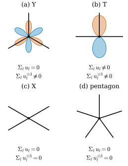

48.4 Comparison with Hutchinson and Structural Properties
Goals
- Hutchinson의 tensor가 있으면 WSFF도 있고 둘이 같다는 것(Proposition 48.4.1)을 증명하고, Hutchinson의 정의가 “WSFF + \(S\)에 nonlinear인 test function의 추가 제약”이라는 저자들의 읽기를 설명할 수 있다.
- half-line junction의 G-linear variation을 계산하고, 어떤 junction에서 그것이 \(0\)이 되는지 판정할 수 있다(Figure 48.4.1, Table 48.4.1).
- WSFF와 WSFF\(^\perp\)의 contraction이 mean curvature와 어떻게 연결되는지(Proposition 48.4.7, Proposition 48.4.8) 말하고, WSFF\(^\perp\)의 닫힌 꼴 \(A^\perp = \beta - c_{jk}\vec H_i\)를 유도할 수 있다.
- compactness(Proposition 5.3)와 WSFF의 수렴(Proposition 5.4)의 가정을 말하고, polygon의 예로 absolute continuity 가정이 왜 필요한지 설명할 수 있다.
Prerequisites
- Section 48.3: G-linear variation, WSFF(Definition 48.3.7), WSFF\(^\perp\)(Definition 48.3.11), Lemma 48.3.5
- Definition 46.6.4(Hutchinson), Proposition 46.6.5와 Figure 46.6.2(junction)
- Theorem 46.5.10(Allard의 compactness)
Motivation
Section 48.3은 WSFF를 정의하고 integral varifold에서 smooth surface의 성질을 지킨다는 것까지 보았다. 남은 질문은 두 가지다. 이미 있던 Hutchinson의 정의와는 어떤 관계인가? 그리고 WSFF는 일반 varifold에서 어떤 성질을 갖고, varifold의 열이 수렴할 때 함께 수렴하는가? 논문 §4가 앞의 것을, §5가 뒤의 것을 다룬다. 앞의 것의 결론은 “Hutchinson의 tensor가 있으면 같고, 없는 곳(junction)에서도 WSFF는 있다”이고, 뒤의 것의 결론은 “WSFF\(^\perp\)는 linear system을 풀 필요도 없는 닫힌 꼴을 갖고, curvature가 \(L^p\)로 고르게 bound되면 WSFF는 수렴한다”이다.
Hutchinson's Tensor and the WSFF
Hutchinson의 정의(Definition 46.6.4, 논문의 Definition 4.1과 (4.2))는 boundary가 없는 smooth \(M\)에서 \(X = \varphi(x, S)e_i\)(\(\varphi \in C^1_c(\Omega \times M_n(\R))\))를 divergence theorem에 넣은 식 (4.1)((46.6.6))을 integral varifold로 옮긴 것이다. 저자들은 이 정의에 대해 세 가지를 지적한다.
- Hutchinson의 tensor는 일반적으로 \((x, S)\)의 함수다. Allard의 generalized mean curvature가 \(x\)만의 함수인 것과 어울리지 않는다. 다만 rectifiable varifold에서는 \(x\)만의 함수가 된다는 것을 Hutchinson 자신이 [Hutchinson86b, Prop 5.2.2]에서 암묵적으로 보였다.
- (4.2)의 가운데 항에서 \(A_{ijk}\)가 \(\varphi\)의 \(S_{jk}\)-도함수에 곱해져 있으므로, (4.2)는 \(A\)를 distribution으로 정의하지 않는다(Section 48.1의 “구조적 장애”).
- tensor의 유일성에는 \(S\)에 linear인 test function만으로 충분하다(같은 Prop 5.2.2). 그래서 저자들은 Hutchinson의 정의를 “core distributional notion(이것이 WSFF가 된다)”과 “\(S\)에 nonlinear인 test function이 주는 추가 제약”의 합으로 읽는다. 추가 제약이 정의를 rigid하게 만든다. curvature가 \(L^p_{\mathrm{loc}}\)(\(p \gt d\))인 integral varifold의 blow-up은 multiplicity를 가진 \(d\)-plane 몇 개의 합뿐이다 [Hutchinson86a].
Proposition 48.4.1 (Hutchinson's tensor is a WSFF). rectifiable varifold \(V\)가 Hutchinson의 의미의 generalized second fundamental form \(\tilde A\)를 가지면, \(V\)는 locally bounded variations와 WSFF \(A^V\)를 갖고, \(\norm{V}\)-a.e. \(x\)에서 \(A^V(x) = \tilde A(x, P(x))\)이다. 여기서 \(P(x)\)는 approximate tangent plane이다. [BLM22, Prop 4.2]
Proof. \(V = v(M, \theta)\)이면 \(\nu_x = \delta_{P(x)}\)이다. (4.2)에 \(S\)에 linear인 test function \(\psi(x, S) = \varphi(x)S_{jk}\)를 넣자. \(\nabla^S\psi = S_{jk}\nabla^S\varphi\)이고 \(D^*_{j'k'}\psi\)는 \((j', k') = (j, k)\)일 때 \(\varphi(x)\), 아니면 \(0\)이다. 그래서
이다. 곧 \(\delta_{ijk}V = -\beta_{ijk}\norm{V}\)이고 singular part가 없으며, \(\beta_{ijk}(x) = \tilde A_{ijk}(x, P(x))\) \(+ P_{jk}(x)\sum_q\tilde A_{qiq}(x, P(x))\)이다(논문의 (4.3)). 그러면 \(\tilde A(x, P(x))\)와 \(A^V(x)\)는 둘 다 \(c^V(x) = P(x)\)인 system (48.3.9)의 해이고, Lemma 48.3.5의 유일성으로 같다. \(\square\)
Remark 48.4.2 (smooth surfaces with constant multiplicity). \(M\)이 smooth \(d\)-submanifold이고 \(c \gt 0\)이 상수이면, \(V = v(M, c)\)의 WSFF는 고전적인 second fundamental form((1.2)의 \(A\))과 같다. [BLM22, Remark 4.3]
논문은 이것을 (4.1)과 위 명제의 결과라고 적는다. \(c\)가 정수가 아니어도 된다. 직접 보려면 Example 48.3.4의 계산에 \(c\)를 곱하면 \(\beta\)가 그대로이고 system의 해가 \(A\)다. 밀도가 상수가 아니면 Example 48.3.10처럼 달라진다.
Junctions
두 정의의 차이는 허용하는 singularity에서 드러난다. Proposition 46.6.5에서 보았듯이 multiplicity \(1\)인 half-line의 junction이 Hutchinson의 curvature varifold인 것은 직선 몇 개의 합일 때뿐이다. G-linear variation은 이렇다.
Proposition 48.4.3 (G-linear variation of a junction). 원점에서 나가는 half-line \(R_l = \{tu_l : t \gt 0\}\)(\(u_l \in \R^2\) unit vector, \(l = 1, \dots, N\). 논문은 \(D_l\)로 쓴다)의 합 \(V = \sum_lv(R_l, 1)\)은 locally bounded variations를 갖고
이다. 이것은 \(\norm{V}\)에 대해 singular(또는 \(0\))이므로 모든 junction이 WSFF를 갖는다. [BLM22, (4.4)]
Proof. \(R_l\) 위에서 \(P^l = u_lu_l^{\mathsf T}\)이고 \(\inner{P^l\nabla\varphi}{e_i} = (u_l)_i\inner{\nabla\varphi}{u_l}\)이다. \(\int_{R_l}\inner{\nabla\varphi}{u_l}\,d\mathcal{H}^1 = \int_0^\infty\tfrac{d}{dt}\varphi(tu_l)\,dt = -\varphi(0)\)이므로 \(\delta_{ijk}V(\varphi) = -\sum_lP^l_{jk}(u_l)_i\varphi(0)\)이다. \(\square\)
first variation은 이 tensor의 contraction \(\delta V = -\big(\sum_lu_l\big)\delta_0\)이다((46.5.7), Proposition 48.3.3). first variation이 원점에서 방향 vector를 더한다면, G-linear variation은 symmetric 3-tensor \(T = \sum_lu_l \otimes u_l \otimes u_l\)을 더한다. 저자들은 이어서 “WSFF가 항등적으로 \(0\)인데 직선의 합이 아닌 junction이 있는가”를 묻는다. 아래 Remark에서 보듯 이 질문은 G-linear variation 전체가 \(0\)인 junction을 찾는 것으로 읽어야 한다.
Proposition 48.4.4 (junctions with vanishing G-linear variation). \(u_l = (\cos\alpha_l, \sin\alpha_l)\)이라 하자. \(\delta_{ijk}V = 0\)(모든 \(i, j, k\))인 것은
인 것과 동치다(여기의 \(i\)는 허수 단위). 특히 정\(N\)각형의 vertex 방향 \(\alpha_l = 2\pi l/N\)이면 \(N \ne 1, 3\)일 때 성립한다. \(N = 9\)이면 직선의 합이 아닌 junction이 G-linear variation \(0\)을 갖는다. [BLM22, §4]
Proof. \(T\)는 symmetric이므로 독립 성분 \(T_{111}, T_{112}, T_{122}, T_{222}\) 넷이 \(0\)이면 된다. \(c_l = \cos\alpha_l\), \(s_l = \sin\alpha_l\)이라 하면 \(c_l^2 + s_l^2 = 1\)에서 \(T_{111} + T_{122} = \sum c_l\), \(T_{112} + T_{222} = \sum s_l\)이므로 네 조건은 \(\sum c_l^3 = \sum s_l^3 = \sum c_l = \sum s_l = 0\)과 같다. \(\cos^3\alpha = \tfrac14(3\cos\alpha + \cos3\alpha)\), \(\sin^3\alpha = \tfrac14(3\sin\alpha - \sin3\alpha)\)이므로 이것은 \(\sum e^{i\alpha_l} = 0\)과 \(\sum e^{3i\alpha_l} = 0\)이다. 정\(N\)각형이면 \(\sum_le^{3i\cdot2\pi l/N}\)은 \(N\)이 \(3\)을 나누지 않을 때 \(0\)이다. \(\square\)
| \(N\) | stationary (\(\sum u_l = 0\)) | \(\delta_{ijk}V = 0\) | 직선의 합 (Hutchinson) | \(\max\abs{T_{ijk}}\) |
|---|---|---|---|---|
| 2 | yes | yes | yes | 0 |
| 3 | yes | no | no | 0.75 |
| 4 | yes | yes | yes | 0 |
| 5 | yes | yes | no | 0 |
| 6 | yes | yes | yes | 0 |
| 7 | yes | yes | no | 0 |
| 8 | yes | yes | yes | 0 |
| 9 | yes | yes | no | 0 |
Verification: verify/v-48-4-hutchinson-properties.py
표에서 보듯 논문의 \(N = 9\)는 가장 작은 예가 아니다. 정오각형(\(N = 5\))과 정칠각형도 G-linear variation이 \(0\)이면서 직선의 합이 아니다. 정\(N\)각형이 아닌 배치까지 포함해도 \(N = 5\)가 가장 작다(Exercise 48.4.3). \(N = 3\)인 \(120^\circ\) Y junction은 stationary이지만 \(T \ne 0\)이다. 비누막의 triple junction이 이 경우다.
Figure 48.4.1은 네 junction의 \(T\)를 cubic form \(f(w) = \sum_l\inner{u_l}{w}^3\)(unit vector \(w\))으로 그린 것이다. \(T\)는 이 함수로 정해진다(symmetric tensor는 대각선에서의 값으로 결정된다). 꽃잎 모양의 곡선은 반지름이 \(\abs{f(w)}\)인 polar curve이고, 주홍은 \(f \gt 0\), 파랑은 \(f \lt 0\)이다. \(f(-w) = -f(w)\)이므로 꽃잎은 반대편에 반대 색으로 짝을 이룬다. (a) Y junction은 \(f = -\tfrac34\sin3\varphi\)인 꽃잎 여섯 장을 갖는다. half-line 방향(위, 왼쪽 아래, 오른쪽 아래)이 주홍 꽃잎의 가운데다. (b) T junction은 \(f = \sin^3\varphi\)로 위아래 두 장이고, 세로 half-line의 짝 없는 끝이 남긴 것이다. (c) X junction과 (d) 정오각형은 \(f = 0\)이라 꽃잎이 없다. 아래 두 줄이 stationary 여부와 \(T = 0\) 여부다. (c)와 (d)는 둘 다 만족하지만 (c)만 직선의 합이다. Figure 46.6.2에서는 Hutchinson의 조건으로 (a)–(d)를 판정했다.

Verification: verify/v-48-4-hutchinson-properties.py
Remark 48.4.5 (what “the WSFF vanishes” means for a junction). Definition 48.3.7의 WSFF는 absolutely continuous part의 density \(\beta\)로 정의된다. (48.4.2)는 원점(\(\norm{V}\)-null)에 집중되어 있으므로 모든 junction에서 \(\beta = 0\)이고 \(A^V = 0\) a.e.이다. 그래서 저자들의 “WSFF가 항등적으로 \(0\)”이라는 조건은 정의 그대로 읽으면 언제나 참이다. 네 equation이 뜻을 가지려면 그것을 “G-linear variation 전체(singular part 포함)가 \(0\)”으로 읽어야 한다. 그렇게 읽으면 이 예의 메시지는 이렇다. G-linear variation이 singular part까지 완전히 \(0\)이어도 Hutchinson의 tensor는 존재하지 않는다. Hutchinson의 rigidity는 \(S\)에 nonlinear인 test function에서 온다. 이 읽기는 우리의 것이다.
거꾸로 보면 G-linear variation은 정오각형 junction을 보지 못한다. 그 junction은 원점에서 분명히 매끄럽지 않지만, \(S\)에 linear인 test function으로는 직선 하나와 구별되지 않는다. 이것이 장점인지 한계인지는 용도에 달려 있다. Section 48.7에서 다시 다룬다.
Remark 48.4.6 (weak differentiability of the tangent plane). Menne의 정리 [Menne16, Thm 15.6]에 따르면 integral varifold가 Hutchinson의 curvature varifold인 것은 \(\delta V\)가 \(\norm{V}\)에 대해 absolutely continuous한 Radon measure이고 approximate tangent plane \(P(x)\)가 Menne의 의미([Menne16, Def 8.3])로 weakly \(V\)-differentiable인 것과 동치다. 이 특징을 써서 Menne와 Scharrer [MenneScharrer18]는 curvature varifold의 개념을 diffuse한 varifold로 넓혔다. [BLM22, Remark 4.4]
Structural Properties
이제 일반 varifold에서 WSFF가 smooth surface의 성질 중 무엇을 지키는지 본다. Proposition 48.3.9의 증명에서 쓴 두 contraction을 정식으로 적은 것이 다음 명제다.
Proposition 48.4.7 (contractions of the WSFF). \(V\)가 locally bounded variations를 가지면 모든 \(i, j, k\)에 대해 다음이 성립한다. \(\vec H^V = -\delta V/\norm{V}\)는 generalized mean curvature이고 \(c = c^V\)이다.
- \(\delta_{ijk}V = \delta_{ikj}V\), \(\beta^V_{ijk} = \beta^V_{ikj}\), \(A^V_{ijk} = A^V_{ikj}\).
- \(\sum_q\beta^V_{iqq} = d\,\vec H^V_i\), \(\sum_q\beta^V_{qiq} = \vec H^V_i\).
- \(\sum_qA^V_{q\cdot q} = (I + c)^{-1}\vec H^V\), \(\sum_qA^V_{\cdot qq} = d\,c(I + c)^{-1}\vec H^V\).
Proof. (a)는 \(S_{jk} = S_{kj}\)와 (48.3.6)에서 나온다. (b)는 \(\sum_qS_{qq} = d\)와 \(\sum_qS_{iq}(\nabla^S\varphi)_q = (\nabla^S\varphi)_i\)에서 \(\sum_q\delta_{\cdot qq}V = d\,\delta V\), \(\sum_q\delta_{q\cdot q}V = \delta V\)이고, Radon–Nikodym 도함수를 비교하면 된다. (c): (48.3.6)을 contract하면 \(\sum_qA_{q\cdot q} = \vec H - c(I + c)^{-1}\vec H = (I + c)^{-1}\vec H\), \(\sum_qA_{\cdot qq} = d\vec H - (\tr c)(I + c)^{-1}\vec H\) \(= d\,c(I + c)^{-1}\vec H\)이다(\(\tr c = d\)). \(\square\)
(b)는 G-linear variation이 mean curvature를 두 가지 방법으로 담고 있다는 뜻이다. (c)는 일반 varifold에서 WSFF의 trace가 \(\vec H\)가 아니라 \((I + c)^{-1}\vec H\)라는 뜻이다. smooth surface의 성질
(논문의 (5.1))은 integral varifold에서는 참이지만(Proposition 48.3.9) 일반적으로는 아니다. 정확히는 (48.4.4)의 두 식이 각각 \(c\vec H^V = 0\)과 동치다(Exercise 48.4.2). WSFF\(^\perp\)는 이 성질을 강제한 것이었고, 실제로 닫힌 꼴을 갖는다.
Proposition 48.4.8 (closed form of the WSFF\(^\perp\)). \(V\)가 locally bounded variations를 가지면
이고, \(\vec H^{V,\perp} = (I - c^V)\vec H^V\)라 하면
\[ \sum_qA^{V,\perp}_{q\cdot q} = \vec H^{V,\perp}, \qquad \sum_qA^{V,\perp}_{\cdot qq} = 0 \]
Proof. \(c = c^V\), \(\vec H = \vec H^V\)라 쓰자. (48.3.13)을 contract하면 \(\sum_q\beta^\perp_{q\cdot q} = \vec H - c(c\vec H) = (I - c^2)\vec H\)이다. (48.3.6)에서 \((I + c)^{-1}(I - c^2) = I - c\)이므로
\[ \begin{aligned} A^\perp_{ijk} &= \beta^\perp_{ijk} - c_{jk}\big((I - c)\vec H\big)_i \\ &= \beta_{ijk} - c_{jk}(c\vec H)_i - c_{jk}\big((I - c)\vec H\big)_i \\ &= \beta_{ijk} - c_{jk}\vec H_i \end{aligned} \]
이다. contract하면 \(\sum_qA^\perp_{qiq} = \vec H_i - (c\vec H)_i\), \(\sum_qA^\perp_{iqq} = d\vec H_i - (\tr c)\vec H_i = 0\)이다. \(\square\)
(48.4.5)가 이 논문에서 가장 실용적인 식이다. WSFF\(^\perp\)는 linear system을 풀 필요 없이 “G-linear variation의 density에서 평균 plane과 mean curvature의 곱을 뺀 것”이다. regularize한 판도 같은 꼴이고(Section 48.5), point cloud에서는 (48.1.2)이 된다. 주의할 점이 하나 있다. 논문의 Introduction은 WSFF\(^\perp\)가 smooth surface의 성질 (3.10)을 만족한다고 쓰지만, 첫 식의 오른쪽은 \(\vec H^V\)가 아니라 \((I - c^V)\vec H^V\)다. 둘은 \(c^V\vec H^V = 0\)일 때만 같다. 이 \(\vec H^{V,\perp}\)는 Definition 47.4.10의 \(\vec H^{V,\perp}_{\rho,\xi,\varepsilon}\)(regularize한 뒤 project한 것)과 다른 대상이다(Conventions).
Example 48.4.9 (a Gaussian cloud of crossed sticks). \(\R^2\)에서 \(f(x) = e^{-\abs{x}^2}\), \(E_1 = e_1e_1^{\mathsf T}\), \(E_2 = e_2e_2^{\mathsf T}\)이고 \(V = f\mathcal{L}^2 \otimes \tfrac12(\delta_{E_1} + \delta_{E_2})\)라 하자(\(d = 1\)). 점마다 가로 막대와 세로 막대가 반씩 섞인 흐린 데이터다. 그러면 \(c^V = I/2\)이고
- \(\delta V(\varphi) = \tfrac12\int\nabla\varphi\,f\,dx = -\tfrac12\int\varphi\nabla f\,dx\)이므로 \(\vec H^V = \nabla f/(2f) = -x\)이다.
- \(\delta_{ijk}V\)는 \((i, j, k) = (1, 1, 1), (2, 2, 2)\)에서만 \(0\)이 아니고 \(\beta_{111} = \vec H_1\), \(\beta_{222} = \vec H_2\)이다.
- WSFF: \((I + c)^{-1} = \tfrac23I\)이므로 \(A_{ijk} = \beta_{ijk} - \tfrac13\delta_{jk}\vec H_i\). contraction은 \(\sum_qA_{q\cdot q} = \tfrac23\vec H\), \(\sum_qA_{\cdot qq} = \tfrac13\vec H\)이다.
- WSFF\(^\perp\): \(A^\perp_{ijk} = \beta_{ijk} - \tfrac12\delta_{jk}\vec H_i\). contraction은 \(\sum_qA^\perp_{q\cdot q} = \tfrac12\vec H\), \(\sum_qA^\perp_{\cdot qq} = 0\)이다.
Verification: verify/v-48-4-hutchinson-properties.py
아무것도 휘지 않았는데 모든 양이 \(0\)이 아니다. 밀도의 기울기가 “curvature”로 읽히는 것이다. Example 48.3.10에서는 \(c\)가 projection이어서 WSFF\(^\perp\)가 가짜 성분을 모두 없앴지만, 여기서는 plane이 고르게 섞여 \(c = I/2\)이므로 절반이 남는다. 모든 막대가 가로이면 WSFF\(^\perp\)는 정확히 \(0\)이 된다(Exercise 48.4.4). 3DGS의 Gaussian을 원자로 보는 varifold(Section 46.8)에서 방향이 제각각인 Gaussian이 뭉친 곳이 이런 상태다.
Compactness and Convergence
Proposition 48.4.10 (compactness). \((V_h)\)가 \(\Omega\) 위에서 locally bounded variations를 갖는 \(d\)-varifold의 열이고 모든 \(i, j, k\)에 대해
이면, weak-* 수렴하는 부분열 \(V_{h_l} \overset{*}{\rightharpoonup} V\)가 있고, \(V\)는 locally bounded variations를 가지며 \(\abs{\delta_{ijk}V}(\Omega) \le \liminf_l\abs{\delta_{ijk}V_{h_l}}(\Omega)\)이다. \(V_h\)가 integral이면 \(V\)도 integral이다. [BLM22, Prop 5.3, (5.3)]
Proof sketch. (48.3.3)에서 \(\delta V = \tfrac1d\sum_i\sum_j\delta_{ijj}V\,e_i\)이므로 (48.4.6)은 \(\sup_h\{\norm{V_h}(\Omega) + \abs{\delta V_h}(\Omega)\} \lt \infty\)를 준다. 그러면 mass의 compactness(Proposition 46.4.9)로 수렴하는 부분열이 있고, integral인 경우는 Allard의 compactness 정리(Theorem 46.5.10)다. \(\delta_{ijk}V_h(\varphi) \to \delta_{ijk}V(\varphi)\)이고 total variation은 weak-* 수렴에 대해 lower semicontinuous이므로 마지막 부등식이 나온다. \(\square\)
Proposition 48.4.11 (convergence of the WSFF). \((V_h)\)가 rectifiable \(d\)-varifold \(V\)로 weak-* 수렴하는 \(d\)-varifold의 열이라 하자. 상수 \(C_0 \gt 0\), \(p \gt 1\)이 있어 \(\delta_{ijk}V_h \ll \norm{V_h}\)이고 모든 \(h\)에서
이면(\(A^h\)는 \(V_h\)의 WSFF), \(\delta_{ijk}V \ll \norm{V}\)이고 measure \(A^h_{ijk}V_h\)가 \(A_{ijk}V\)로 weak-* 수렴한다. [BLM22, Prop 5.4, (5.4)]
Proof sketch. (1) (48.3.5)에서 \(\abs{\beta^h} \le C_n\sup\abs{A^h}\)이므로 Hölder 부등식으로 compact set \(K\)마다 \(h\)에 무관한 상수 \(C\)에 대해 \(\abs{\delta_{ijk}V_h}(K) \le C\norm{V_h}(K)^{1/p'}\)이다(논문의 (5.5)). 그래서 \(\delta_{ijk}V_h \overset{*}{\rightharpoonup} \delta_{ijk}V\)가 measure로서 성립하고, \(L^p\) bound가 극한으로 넘어가므로([AFP00, Example 2.36]) \(\delta_{ijk}V \ll \norm{V}\)이다. (2) 같은 bound로 부분열에서 \(A^h\norm{V_h} \overset{*}{\rightharpoonup} f\norm{V}\), \(A^hV_h \overset{*}{\rightharpoonup} gV\)이고, \(V\)가 rectifiable(\(\nu_x = \delta_{P(x)}\))이므로 \(f(x) = g(x, P(x))\)이다. (3) \(A^h\)가 만족하는 system에서 극한을 취하면 \(f_{ijk} + P_{jk}\sum_qf_{qiq} = \beta_{ijk}\)이고, Lemma 48.3.5의 유일성으로 \(f = A\)이다. 극한이 유일하므로 열 전체가 수렴한다. \(\square\)
이 명제는 “curvature가 \(L^p\)로 고르게 bound되면 WSFF는 varifold의 수렴에 대해 연속이다”라는 뜻이다. 가정 \(\delta_{ijk}V_h \ll \norm{V_h}\)이 point cloud와 polygon에서는 성립하지 않는다는 것이 핵심이다. 다음 예가 이 가정이 빠지면 결론이 틀린다는 것을 보여 준다.
Example 48.4.12 (inscribed polygons). unit circle에 내접하는 정\(N\)각형의 varifold \(V_N\)(vertex \(\gamma_m = (\cos(2\pi m/N), \sin(2\pi m/N))\), \(\gamma_m\)에서 \(\gamma_{m+1}\)로 가는 edge의 unit tangent \(t_m\), 첨자는 mod \(N\))를 생각하자. edge 하나 위에서 \(\delta_{ijk}\)를 계산하면(Proposition 48.4.3의 증명과 같다)
이다. 다음이 성립한다(우리의 예).
- mass는 둘레 \(2N\sin(\pi/N) \lt 2\pi\)이고, \(\abs{t^{\otimes3} - s^{\otimes3}}_F^2 = 2 - 2\cos^3\theta\)(\(\theta\)는 \(t\)와 \(s\) 사이의 각)에서 total variation의 합 \(\sum_m\abs{t_{m-1}^{\otimes3} - t_m^{\otimes3}}_F\)은 \(N = 8, 64, 256\)에서 \(9.10, 10.85, 10.88\)로 bound되어 있다. 그래서 Proposition 48.4.10이 적용되고, 극한인 circle은 locally bounded variations를 갖는다. 실제로 circle의 \(\int\abs{\beta}_F\,ds = 2\pi\sqrt3 = 10.88\)이다.
- \(\delta_{ijk}V_N\)은 vertex의 Dirac mass뿐이므로 absolutely continuous part가 \(0\)이고 \(V_N\)의 WSFF는 a.e. \(0\)이다. 그러나 circle의 WSFF는 \(0\)이 아니다. \(A^NV_N = 0\)은 \(AV\)로 수렴하지 않는다.
- 그래도 G-linear variation 자체는 수렴한다. test function \(\varphi(x) = e^{-\abs{x - (0.8, 0.3)}^2/0.3}\)에 대한 \(\max_{ijk}\abs{\delta_{ijk}V_N(\varphi) - \delta_{ijk}V(\varphi)}\)는 \(N = 8, 16, 32, 64\)에서 \(0.135, 0.018, 0.0045, 0.0011\)로 \(1/N^2\)처럼 준다.
Verification: verify/v-48-4-hutchinson-properties.py
곧 polygon이나 point cloud에서는 “G-linear variation의 density를 읽는다”는 정의가 작동하지 않는다. 정보는 vertex의 Dirac mass에 있고, 그것을 이웃에 퍼뜨려 density로 바꾸어야 한다. 이것이 다음 절의 regularization이다.
Summary
- rectifiable varifold가 Hutchinson의 tensor를 가지면 그것은 WSFF다(Proposition 48.4.1). Hutchinson의 정의는 \(S\)에 linear인 test function(WSFF)과 nonlinear인 test function의 추가 제약으로 이루어지고, 뒤의 것이 junction 같은 singularity를 배제한다.
- junction의 G-linear variation은 \(-\big(\sum_lu_l^{\otimes3}\big)\delta_0\)이다. 정오각형, 정칠각형, 정구각형 junction에서는 이것이 \(0\)이지만 Hutchinson의 tensor는 없다(Table 48.4.1). 정의대로의 WSFF는 모든 junction에서 a.e. \(0\)이다.
- 일반 varifold에서 \(\sum_qA^V_{q\cdot q} = (I + c)^{-1}\vec H^V\)이고, smooth surface의 성질은 \(c\vec H = 0\)일 때만 성립한다. WSFF\(^\perp\)는 \(A^\perp = \beta - c_{jk}\vec H_i\)라는 닫힌 꼴을 갖고 \(\sum_qA^\perp_{q\cdot q} = (I - c)\vec H\), \(\sum_qA^\perp_{\cdot qq} = 0\)을 만족한다.
- G-linear variation의 total variation이 bound되면 compactness가 있고, curvature가 \(L^p\)로 bound되고 variation이 absolutely continuous이면 WSFF가 수렴한다. polygon은 앞의 것만 만족하고, 그 WSFF는 \(0\)이라 circle의 WSFF로 수렴하지 않는다.
다음 절에서는 논문 §6을 읽는다. G-linear variation과 mass를 kernel로 흐려 어떤 varifold에서도 계산되는 \(\varepsilon\)-WSFF와 \(\varepsilon\)-WSFF\(^\perp\)를 정의하고, smooth surface에서의 consistency와 varifold의 열에 대한 수렴 속도 정리(Theorem 6.8, 6.11)를 읽는다.
Quick check
Exercise 48.4.1 ★ \(\cos^3x = \tfrac14(3\cos x + \cos3x)\)를 써서 Y junction(\(90^\circ, 210^\circ, 330^\circ\))의 cubic form이 \(f(\varphi) = \sum_l\cos^3(\varphi - \alpha_l) = -\tfrac34\sin3\varphi\)이고, T junction(\(0^\circ, 90^\circ, 180^\circ\))의 cubic form이 \(\sin^3\varphi\)임을 보여라.
Solution
Y: \(\sum_l\cos(\varphi - \alpha_l) = \inner{w}{\sum_lu_l} = 0\)이다. \(3\alpha_l = 270^\circ, 630^\circ, 990^\circ\)는 모두 \(270^\circ\)와 같으므로 \(\sum_l\cos(3\varphi - 3\alpha_l)\) \(= 3\cos(3\varphi - 270^\circ) = -3\sin3\varphi\)이다. 그래서 \(f = \tfrac14(0 - 3\sin3\varphi)\)이다. T: \(\sum_l\cos(\varphi - \alpha_l)\) \(= \cos\varphi + \sin\varphi - \cos\varphi = \sin\varphi\)이고 \(\sum_l\cos(3\varphi - 3\alpha_l)\) \(= \cos3\varphi - \sin3\varphi - \cos3\varphi = -\sin3\varphi\)이므로 \(f = \tfrac14(3\sin\varphi - \sin3\varphi) = \sin^3\varphi\)이다.
Verification: verify/v-48-4-hutchinson-properties.py
Exercise 48.4.2 ★ Proposition 48.4.7(c)에서 (48.4.4)의 각 식이 \(c\vec H = 0\)과 동치임을 보여라.
Solution
첫 식: \((I + c)^{-1}\vec H = \vec H\) \(\iff \vec H = (I + c)\vec H\) \(\iff c\vec H = 0\). 둘째 식: \(c\)와 \((I + c)^{-1}\)은 commute하므로 \(d\,c(I + c)^{-1}\vec H = d(I + c)^{-1}c\vec H\)이고, \((I + c)^{-1}\)이 invertible이므로 이것이 \(0\)인 것은 \(c\vec H = 0\)과 같다.
Exercise 48.4.3 ★★ 직선의 합이 아니면서 G-linear variation이 \(0\)인 junction은 half-line이 적어도 \(5\)개임을 보여라. (힌트: \(N = 3\)이면 \(\sum u_l = 0\)에서 세 방향이 \(120^\circ\) 간격이다. \(N = 4\)이면 \(\sum u_l = 0\)인 네 unit vector는 반대 방향의 두 쌍이다.)
Solution
\(N = 1, 2\)는 각각 \(\sum u_l \ne 0\)이거나 직선이다. \(N = 3\): \(u_1 + u_2 = -u_3\)에서 \(\abs{u_1 + u_2} = 1\)이므로 \(\inner{u_1}{u_2} = -\tfrac12\)이고, 같은 이유로 모든 쌍이 \(120^\circ\)다. 그러면 \(3\alpha_l\)이 모두 같아 \(\sum e^{3i\alpha_l} = 3e^{3i\alpha_1} \ne 0\)이다. \(N = 4\): \(s = u_1 + u_2 = -(u_3 + u_4)\)라 하자. \(s = 0\)이면 \(u_2 = -u_1\), \(u_4 = -u_3\)이다. \(s \ne 0\)이면 합이 \(s\)인 두 unit vector는 \(s/2 \pm h\)(\(h \perp s\), \(\abs{h}^2 = 1 - \abs{s}^2/4\))뿐이므로 \(\{u_1, u_2\} = \{-u_3, -u_4\}\)이다. 어느 경우든 직선 둘의 합이다. 그래서 \(N \ge 5\)이고, 정오각형이 실제로 예다(Table 48.4.1).
Verification: verify/v-48-4-hutchinson-properties.py
Exercise 48.4.4 ★★ Example 48.4.9에서 막대를 모두 가로로 바꾼 \(V = f\mathcal{L}^2 \otimes \delta_{E_1}\)(\(f = e^{-\abs{x}^2}\))의 \(\vec H^V\), WSFF, WSFF\(^\perp\)를 구하여라. 어느 쪽이 “가로 막대는 휘지 않았다”는 직관과 맞는가?
Solution
\(\delta V(\varphi) = \int E_1\nabla\varphi\,f\) \(= \big(\int\partial_1\varphi\,f\big)e_1\) \(= -\big(\int\varphi\,\partial_1f\big)e_1\)이므로 \(\vec H^V = (\partial_1f/f)e_1 = -2x_1e_1\)이다. tangent 방향(\(e_1\))이다. \(\delta_{ijk}V\)는 \((1, 1, 1)\)에서만 \(0\)이 아니고 \(\beta_{111} = \partial_1f/f = \vec H_1\)이다. \(c = E_1\)은 projection이고 \(\vec H\)가 그 image에 있으므로 \((I + c)^{-1}\vec H = \tfrac12\vec H\)이다. WSFF는 \(A_{111} = \beta_{111} - \tfrac12\vec H_1 = -x_1\)이고 나머지는 \(0\)이다. WSFF\(^\perp\)는 (48.4.5)로 \(A^\perp_{111} = \beta_{111} - (E_1)_{11}\vec H_1 = 0\)이고 나머지도 \(0\)이다. 곧 WSFF\(^\perp \equiv 0\)이고, 직관과 맞는 쪽은 WSFF\(^\perp\)다. WSFF는 밀도의 기울기를 \(A_{111}\)로 읽는다.
Verification: verify/v-48-4-hutchinson-properties.py